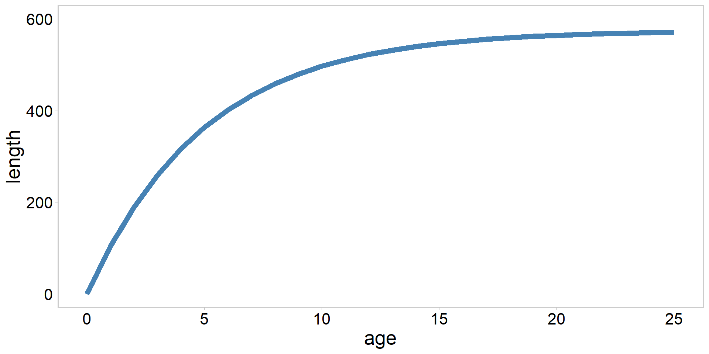
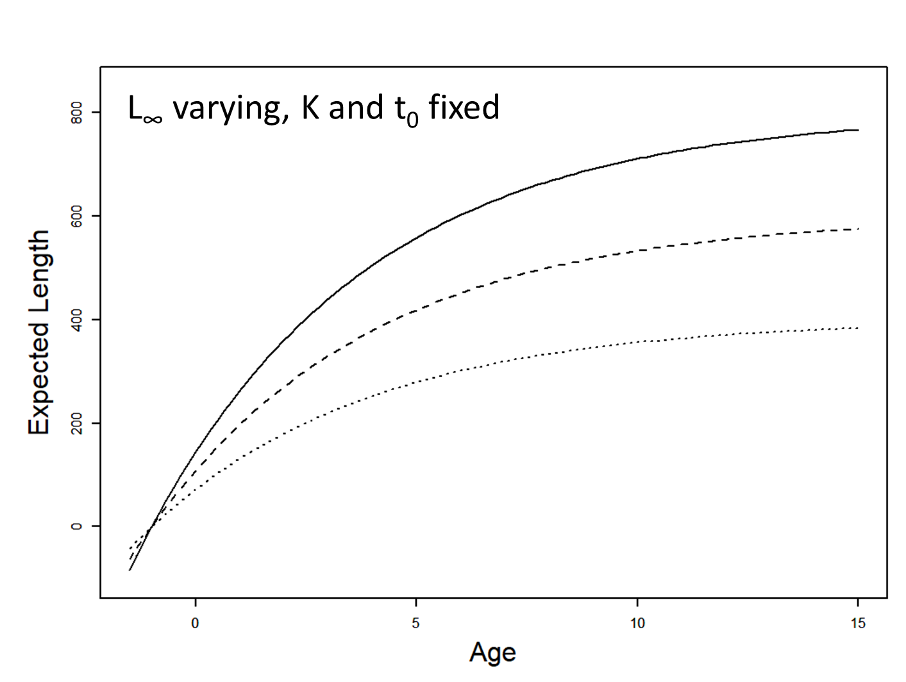
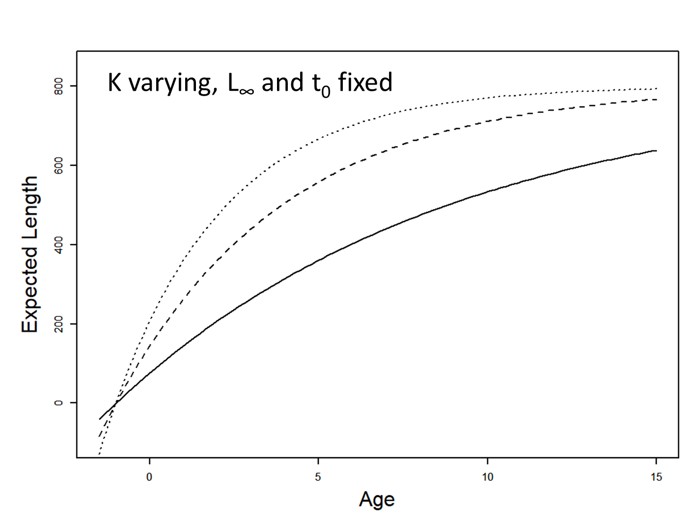
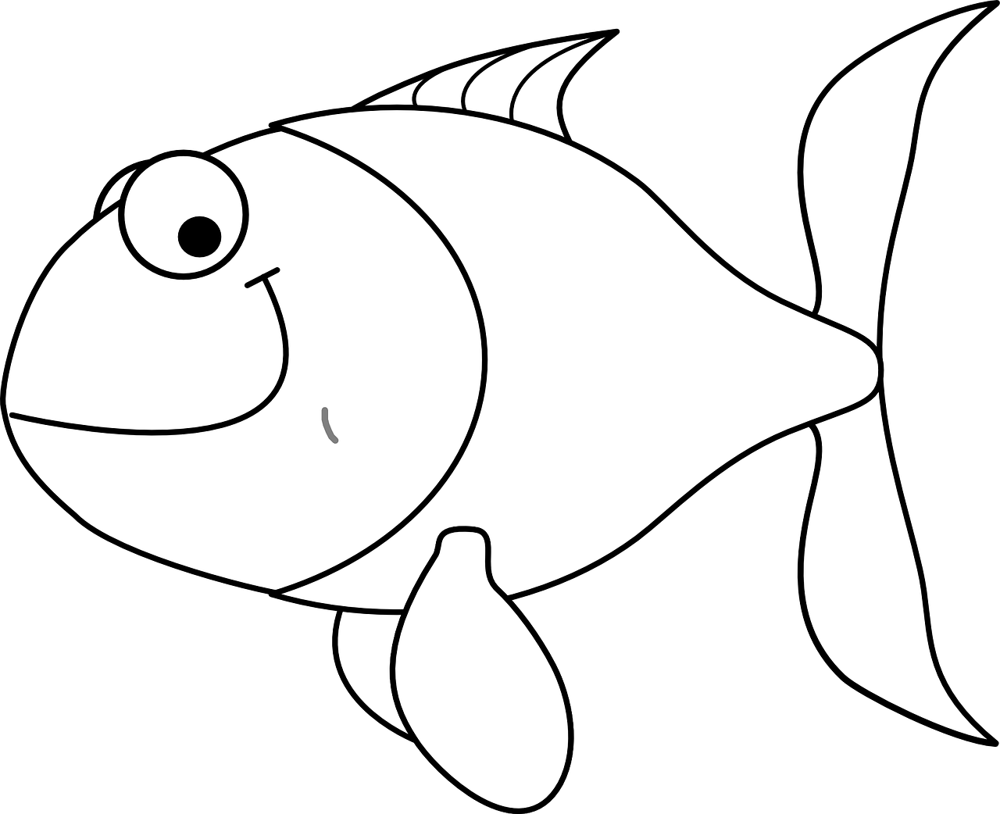
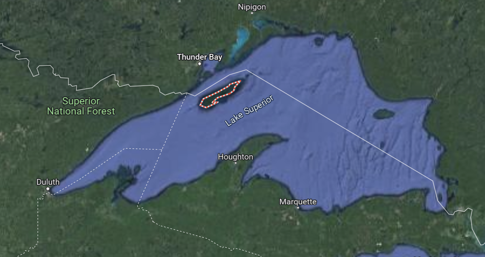

Fitting nonlinear ecological models in Stan
FW 891
Click here to view presentation online
18 September 2023
Purpose
- Introduce nonlinear models
- Demonstrate how those models can be powerful for answering bespoke resource management questions
- Demonstrate some tricks for fitting nonlinear models
- Gain familiarity with non-standard models and estimating them in Stan
Nonlinear modeling is like wandering down a sketchy alley with no end in sight
However…
- Bespoke ecological relationships critical for answering management relevant questions
- Building models for a specific problem at hand rather than shoe-horning a dataset into an easy modeling framework
- Often yields important insights into ecology and hence for resource mgmt
- Many agency-collected datasets have been scoured by analysts using simpler linear modeling tools (GLM, GLMM), so nonlinear modeling is often a powerful way to look at old datsets through fresh eyes
see Cahill et al. 2018; Cahill et al. 2022
What is a nonlinear model
A nonlinear model is a model in which the predicted values are nonlinear functions of the parameters, not necessarily of the predictor variables
This is a linear model because y is a linear function of a, b, and c even though it is a nonlinear function of x:
\[ y = a + bx + cx^2 \]
- Whereas the following power-law is a nonlinear model: \[ y = ax^b \]
Bolker et al. 2013
Linearizing the model via algebra
We could linearize the previous equation by taking logarithms \[ log(y) = log(a) + b \cdot log(x) \]
We could solve the nonlinear equation on the previous slide using something like
nls()or via the linear model above usinglm()in RHowever:
- Nonlinear version assumes a constant standard deviation and the linear version assumes a constant coefficient of variation
Where do nonlinear model equations come from?
Where do nonlinear model equations come from?
- Often (but not always) formulated based on biological first principles
- Typically represented as something like a differential equation (examples: Predator-prey models, Stock-Recruitment models, Somatic Growth models, logistic population growth, meta-population models, etc.)
- This means that estimating the parameters of these models is more likely to yield ecologically relevant insights
see examples in Ricker 1954; Beverton and Holt 1957; Brännström and Sumpter 2005
Deriving a nonlinear model: an example
- The von Bertalanffy growth model is often used to report fish growth patterns
- Derived from a bioenergetics model: \[ \frac{\mathrm{d} W}{\mathrm{~d} t}=H W_{t}^{\frac{2}{3}}-m W_{t} \]
where W is weight at time t, H and m are mass-specific anabolic (tissue building) and catabolic (breaking down tissue) terms
Beverton and Holt 1957
Deriving a nonlinear model: an example
Solving that differential equation, and transforming from weight to length yields the von Bertalanffy growth model:
\[ \hat{l}_{i}=l_{\infty}\left\{1-\mathrm{e}^{\left[-(K)\left(a_{i}-t_{0}\right)\right]}\right\} \]
- where \(a_{i}\) and \(\hat{l}_{i}\) are the age and predicted length of fish i
- \(l_{\infty}\) is a parameter that represents the average asymptotic maximum length of fish
- K is the unitless Brody “growth” coefficient
- t0 is a nuisance parameter that describes age when length is hypothetically zero
Visualizing that model in R
Visualizing the model
Figure credit: Jim Bence
Visualizing the model
Figure credit: Jim Bence
Why this nonlinear hogwash is neat
- The model on the previous slide implies the following
\[ l_{\infty}=\frac{H}{m} \cdot \alpha^{-\frac{1}{3}} \]
where \(\alpha\) is the shape parameter from a weight-length relationship, and
\[ K=\frac{m}{3} \]
so it allows us to explicitly model the ecological processes we are interested in if we are clever!
Some challenges associated with nonlinear modeling
- Requires a better handle on both math/calculus and numerical computing
- Need to understand the properties of a variety of probability distributions and deterministic response functions (Link and Barber 2010; Bolker et al. 2013)
- Even after a model has been properly formulated, it can be difficult to fit to data and estimate parameters
- No gaurantees of global optimum, which means model checking and priors even more important
- There is no “dummies” guide to nonlinear ecological model fitting
- Critical to have good starting values, priors, tests with simulated data, etc.

see Bolker et al. 2013
Advice (from Bolker et al. 2013)
- Most complex models are extensions of simpler models
- Thus, often makes sense to fit reduced versions of the model and build up working code blocks
- Can use reduced models to get good starting values for more complex models in some cases
- Choose a subset of your data that makes your code run fast during the debugging stage
- Keep It Simple Stupid (KISS), at least to start
Advice cont’d (Gelman and Hill 2006)
“Our general approach to finding problems in statistical modeling software is to get various crude models or models with no predictors to work and then gradually build up to the model we want to fit. If you set up a complicated model and you cannot get it to run (or it does and its results do not make sense) then either build it up from scratch or strip it down until you can get it to work and make sense”
Unidentifiability (Bolker 2009)
- In extreme cases, may try to fit unidentifiable models
- These are models that cannot, either in principle or more often in practice, be fitted at all with the available data
- Happens to inexperienced/enthusiastic modelers, but also experts
- Use common sense (thinking about your model) and do model checks
- Simulated data can help us better understand a model, too
Specific suggestions to overcome problems
- Initially omit complexities of the model as much as possible (random effects, zero inflation, imprefect detection)
- Hold some parameters constant or set strong priors to restrict parameters to a narrow range
- Reduce the model to a simpler form by setting some parameters, especially exponents or shape parameters, to null values
- e.g., try a Poisson model before a negative binomial model
- or an exponential suvival model before a Gamma model
Bolker et al. 2013
Pick reasonable starting values
- Starting the optimization or simulation routine sufficiently close to the best values often makes the difference between success and failure
- Stan doesn’t require you to pick starting values (it will do so for you), but…
- Most important step: make sure initial parameter values are on the right order of magnitude
- For parameters that are very uncertain, estimating the logarithms of the original parameters can be helpful
- Plot the data and eyeball initial values, overlay predictions for initial values on the data
Bolker et al. 2013
Reshape the goodness of fit surface
- Think of the problem geometrically, as an attempt to map out the posterior surface
- Posterior geometry is a function of priors, model structure, and the information content within your data
- One can often improve the shape of the posterior, and hence the stability and efficiency of Stan (or other software platforms) without changing the biological meaning of the model or its goodness of fit
- Reparameterization may be unnecessary, helpful, or essential to solving a specific problem
Bolker et al. 2013
Simulation
- Mentioned this before, but simulation is perhaps the single most valuable tool for debugging complex models
- Code up the data generating process(DGP), and give your estimation model good data to see if it can recover truth
- Can reduce data quality to mirror challenges observed or perceived in the real data once you get your model running
- Helps you find bugs, identify unidentifiability, better understand your model, etc.
- Critical component of a modern Bayesian workflow, and the best case scenario is that the estimator is able to recover true parameters
Hilborn and Mangel 1997; Gelman et al. 2022
Scaling
- Parameters with strongly different scales lead to likelihood surfaces with different slopes or curvatures in different directions
- Often causes numerical problems
- Rescaling parameters by appropriate constants can imrpove robustness of fit
- Researchers often scale predictor variables by standard deviation
- See this link:
Bolker et al. 2013
Remove correlation in the likelihood surface
- Strongly correlated likelihood surfaces can be difficult for MCMC algorithms
- One simple strategy:
- Centering predictor variables, by subracting their mean or something near the center of the distribution of the predictor variable
- Centering redefines the intercept or reference level of the model and strongly reduces correlation between slope and intercept parameters
- Also improves interpretability Bolker et al. 2013
In class examples
von Bertalanffy model to estimate fish growth (fake data where I know truth but you do not; easy)
Type-II predator-prey model for wolves and moose (real data from Isle Royale; intermediate)
Schaefer surplus-production model to estimate maximum sustainable yield (real data from south Atlantic Albacore Tuna; hard)
The von Bertalanffy growth model
The von Bertalanffy growth model
Will a 21 inch minimum length limit work?
The model: \[ \begin{array}{l} L_{i}=L_{\infty}\left(1-e^{-K\left(a_{i}-t_{0}\right)}\right)+\varepsilon_{i} \\ \varepsilon_{i} \stackrel{i i d}{\sim} N\left(0, \sigma^{2}\right) \end{array} \]
Fit this model using Stan
Evaluate your model
Predator-prey models
Isle Royale Wolf-Moose dynamics
- During the winter of 1948-49, an adventurous band of timber wolves set out from Minnesota’s north shore, crossed the Lake Superior ice, and arrived on Isle Royale
- No harvest of wolves or moose on Isle Royale
- One of the only places wolves survived by the 1960s in the lower 48
- Wolf-moose dynamics on Isle Royale have contributed immeasurable information on wolf ecology and predator-prey dynamics
Wydeven et al. 2009
The Isle Royale natural experiment
Predator-prey models: Background
- During the 1950s Buzz Holling conducted experiments to investigate how a predator’s rate of prey capture is related to prey density
- This is called a functional response
- Simplest functional response (Type I) relates capture rate C and prey density N via a linear relationship:
\[ C=\alpha N \]
where \(\alpha\) is a proportionality set by the rate at which predators encounter prey
Holling 1959a, b
Predator-prey models: Background
- Type I dynamics ignore an important aspect of the ecology: handling time
- So Buzz sat down and derived a so-called Type-II predator-prey relationship (using calculus) that accounted for handling time h:
\[ C=\frac{\alpha N}{1+\alpha h N} \]
- where h begins when the predator finds the prey item and ends when the time the prey item is eaten
Holling 1959b
Type-II functional response
What is the handling time for a wolf kill on Isle Royale?
The model: \[ \begin{array}{l} C_{i}=\frac{\alpha N_{i}}{1+\alpha h N_{i}}+\varepsilon_{i} \\ \varepsilon_{i} \stackrel{i i d}{\sim} N\left(0, \sigma^{2}\right) \end{array} \]
where i represents an observed moose density \(N_{i}\) and a corresponding obsrvation of kills per wolf per month \(C_{i}\)
In groups of < 3, fit the model and evaluate MCMC algorithm and fit
How hard do you want the problem to be?
Tuna sustainability in the south Atlantic
Tuna sustainability: background
- There are many models that are used to assess the sustainability of fish stocks
- Simplest of these is the Schaefer surplus production model, which is based on the logistic population growth model
- Main idea behind this models is that population productivity (and hence harvest) is maximized at some intermediate population level because of density dependence in either per capita birth or death rates
Beverton and Holt 1957
The Schaefer model
\[ \begin{aligned} B_{0} & = K \\ B_{t+1} & =B_{t}+r B_{t}\left(1-\frac{B_{t}}{K}\right)-C_{t} \end{aligned} \]
- K is carrying capacity
- r is the intrinsic population growth rate
- \(B_{t}\) and \(C_{t}\) is biomass and fishery catch (in biomass units) in year t
- Note \(B_{0}\) need not be set at K
Beverton and Holt 1957; Hilborn and Mangel 1997
Schaefer model continued
To relate the model to data we rely on the fact that \[ \hat{I}_{t}=\frac{C_{t}}{E_{t}}=q B_{t} \]
\(\hat{I}_{t}\) is the predicted value of the index of relative abundance in year t
\(E_{t}\) is the harvesting effort in year t
q is catchability coefficient, defined as the amount of biomass/catch taken with one unit of effort
Catch per unit effort (CPUE = \(\frac{C_{t}}{E_{t}}\)) can then be related to a survey index or fishery catches via a lognormal likelihood function:
\[ log(CPUE_{t}) \stackrel{i i d}{\sim} N\left(log(q) + log(B_{t}), \tau^{2}\right) \]
- Note \(B_{t}\) is calculated via the dynamic equation on the previous slide, and that \(log(\frac{C_{t}}{E_{t}}) = log(q) + log(B_{t})\)
Cool things about the Schaefer model
Maximum sustainable yield (MSY) is the largest yield (or catch) that can be taken from a species’ stock over an indefinite period (theoretically)
Easy to determine MSY with this model: \[ MSY = r \cdot K/4 \]
And can also kick out the corresponding harvesting effort that would achieve MSY: \[ EMSY = r / (2 \cdot q) \]
Because we are Bayesian we can kick these management quantities out as derived variables
Beverton and Holt 1957; Hilborn and Mangel 1997
The problem
- Estimate MSY for a south Atlantic albacore tuna fishery
- The tuna data
- Relate the index of fishery CPUE to fishery catches via the Schaefer model
- Some trickery needed to get this miserable thing going in Stan, including special care with priors
- Let’s go through this thing together
- See also Millar and Meyer 2000 for specific prior choices
Recap
- We have introduced nonlinear models
- Hopefully it has been conveyed that these things are tricksy, but really critical for many important ecological and resource mgmt problems
- Up next…

References
Beverton and Holt. 1957. On the dynamics of exploited fish populations. Chapman and Hall.
Bolker, B. 2009. Learning hierarchical models: advice for the rest of us. Ecological Applications, 19, 588–592.
Bolker et al. 2013. Strategies for fitting nonlinear ecological models in R, AD Model Builder, and BUGS. Methods in Ecology and Evolution. doi: 10.1111/2041-210X.12044
Brännström and Sumpter. 2005. The role of competition and clustering in population dynamics. Proceedings of the Royal Society B. doi: https://doi.org/10.1098/rspb.2005.3185
Cahill et al. 2018. Multiple challenges confront a high effort inland recreational fishery in decline. Canadian Journal of Fisheries and Aquatic Sciences.
Cahill et al. 2022. Unveiling the recovery dynamics of walleye after the invisible collapse. Canadian Journal of Fisheries and Aquatic Sciences.
Gelman and Hill 2006. Data Analysis Using Regression and Multilevel/Hierarchical Models.
Gelman et al. 2020. Regression and other stories. Cambridge University Press.
Hilborn and Mangel 1997. The Ecological Detective.
Holling, C. S. 1959a. The components of predation as revealed by a study of small mammal predation of the European pine sawfly. Canadian Entomology 91:293–320
Holling, C. S. 1959b. Some characteristics of simple types of predation and parasitism. Canadian Entomology 91:385–398.
References
Link and Barber 2010. Bayesian inference with ecological applications. Academic Press.
Millar and Meyer 2000. Nonlinear state space modeling of fisheries biomass dynamics by using Metropolis-Hastings within-Gibbs sampling. Appl. Statist. 49:327-342.
Monnahan et al. 2017. Faster estimation of Bayesian models in ecology using Hamiltonian Monte Carlo. Methods in Ecology and Evolution.
Wydeven et al. 2009. Recovery of Gray Wolves in the Great Lakes Region of the United States. Springer.